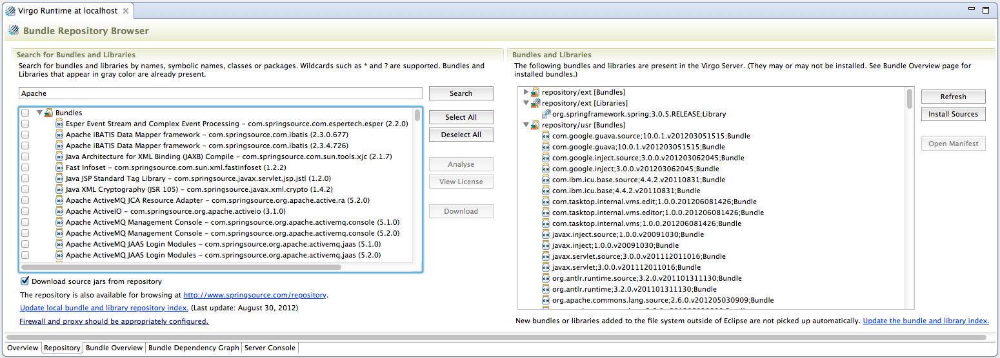

The Repository Browser allows you to see what bundles and libraries are available on the @product.instance and to very easily install bundles and libraries from the remote Enterprise Bundle Repository. To view resources installed on the Server select the "Repository" tab in the server editor.

The left section of the Repository Browser allows the user to run searches against the SpringSource Enterprise Bundle Repository and displays matching results. The search can take parts of bundle symbolic names, class or package names and allows wildcards such as ‘?’ and ‘*’. By selecting the checkbox left to a matching bundle and/or library and clicking the "Download" button it is very easy to install new bundles in the Virgo Runtime. For your convenience JARs containing the bundle source code can be automatically downloaded as well.
Clicking the "Download" button will trigger an Eclipse background job that will download the selected repository artifacts and -- if desired -- the source JARs one after another.
The section on the right displays the bundles and libraries that exist on the server. Bundles with available sources are visually marked. You can very easily download missing source JARs by using the "Install Sources" button. Note that these bundles may or may not be actually "installed" on the Virgo Runtime in the sense that they are known to it -- they may simply exist in the respective directories.